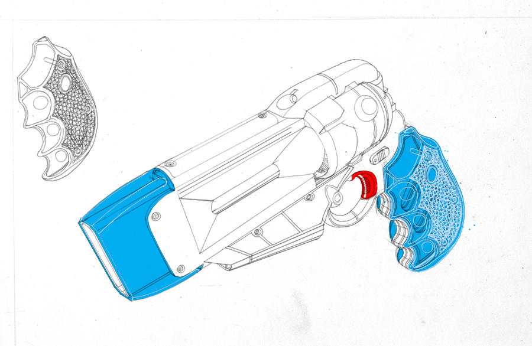

DMV Universe
John Staton's words about America Jones and the Not-Too-Distant-Dystopian-Cyberpunk-Future. From his DeviantArt posts and comment threads, 2008 through 2016.
01The Pitchexpand_more

The woman on the futuristic scooter if AJ, the not-too-distant-dystopian-future's toughest, most badass meter maid. The red headed dude is her partner, Drew, the not-too-distant-dystopian-future's least badass meter maid.
They patrol the Megarage, the pinnacle of multi-level parking structures, and almost a city unto itself; and they fight ( At least AJ does.) corporate sponsored youth gangs; highly armed criminally, desperate car pools; and coin operated robots who dispense the not-too-distant-dystopian-future's most pernicious illicit substance--coffee.
Anyone whose ever known me has suffered under the extremely long held belief that I will eventual produce a comic, or cartoon, or series of cocktail napkin sketches containing this bizarre concept. To date I mostly have a lot of promisory notes in the form of drawings like this one.
1
2076. From Future of Parking Enforcement (Nov 7, 2008):
The thought behind this picture was a possible slogan for the story:
"It's 2076, do you know where your car is?"
A fan noticed the tricentennial connection in 2011. John:
Finally someone notices the tricentennial connection.
(1776 + 300 = 2076. A woman named America on the nation's tricentennial.)
Hmmm that might work better than "Not-too-distant-dystopian-cyberpunk-future", which doesn't even lend itself to am acronym. (NTDDCF? See what I mean?)
2
A fan suggested "Noted, Chief" and John called it "actually cute. Certainly more than I was able to come up with."
- ↑ From DMV a' la FLCL (Nov 7, 2008):
- ↑ John never settled on a name for the setting. He tried abbreviating it at least four ways: NTDDCF, NTDCDF, NTCCDF, and just "NTDCD future". From Rifle Maid comments:
02The Worldexpand_more

The most valuable thing in the DMV not-too-distant-cyberpunk-dystopian-future is a 6 x 3 meter rectangle of road surface watched over by a cycloptic parking meter and delineated by two inch wide lines of paint. These simple slivers of territory are easily worth a man's life --especially during rush hour! When the spaces become scarce, ritualized combat begins.
1
The thing is, you can earn your share or food water and natural resources--you just have to show up on time for work. Thus the demand for parking space.
And believe me, the combat is going to get a lot uglier.
I'll tell you about old ladies later.
2
In the future patrolled by the likes of Dice, as well as her comrades and rivals, parking garages are a vastly more dangerous place than they are today. Carpools have evolved into armed gangs, fighting with a vast array of weapons to acquire parking space. Even drivers unaffiliated with carpools settle disputes with violent means.
As a result of this escalation of parking related assaults, Meter Maids have to be armed. However, since future police are banned from the use lethal weapons, their arsenal usually consists of incapacitation weapons, such as the aforementioned Thug Zapper, and of course the standard issue Parking Ticket Dispenser.
3
Perps are by no means "occasional" here. In fact, there will be need for bigger weapons in the future. The "not-to-distant-dystopic-cyberpunk-future" future.
4
The Megarage
From the FLCL pitch: "the pinnacle of multi-level parking structures, and almost a city unto itself"
From Killer Camaero: "she wandered into the mighty Megarage"
Yes it would, and it would negate the need for 50 story parking garages. Not to mention it's far beyond the technology in the story. ;P
5
Coffee Is Illegal
They also serve as emergency thug muscle whenever the DMV or the GHP raid your coffee house. In the NTDCD future you see--coffee is illegal.
6
Also in the FLCL pitch: "coin operated robots who dispense the not-too-distant-dystopian-future's most pernicious illicit substance--coffee."
The Law
Future police are banned from using lethal weapons. Their arsenal consists entirely of incapacitation gear: Thug Zappers, Roboots, and of course the standard-issue PTD.
Since future police are banned from the use lethal weapons, their arsenal usually consists of incapacitation weapons, such as the aforementioned Thug Zapper, and of course the standard issue Parking Ticket Dispenser.
7
No animals in law enforcement. From Rifle Maid comments (June 2010):
All the duties once performed by dogs are done by spunky l'il robots in the NTDDCF. The exposure of animals to harmful situations like explosives detection is considered barbaric by the more evolved denizens of the future.
The "K-9's" employed are more like Doctor Who's old robotic sidekick--only, you know, called something else, since I don't have any rights to that name.
The Tone
Even though firearms will be used with dizzying frequency, almost no one will ever get hurt or die.
You, know, like in the old G.I. Joe cartoon. :D
8
The Vibe
Yea, to me Anime=Cyberpunk. I loved Akira, Dominion, Ghost in the Shelll, BGC. Where the future isn't full of magic technology, and there's still problems ordinary bums have to rise up and solve, in the absence of glittering perfect idealists.
Despite the fact they're full of cyborgs and sentient machines, those futures always felt more authentic.
9
John's one-line summary (Rifle Maid comments):
Spaceflight, flying cars, light-up umbrella handles, and all of the street-crime and political corruption of home. ;)
What the NTDDCF actually looks like. From Silent Mobius Kiddy description (Mar 7, 2009):
If the aforementioned claptrap is put before a Syd Mead-esque skyline, dotted by crushing multitudes of luminous, crystal-faceted sky scrapers, and swarmed by levitating traffic jams of flying cars and bill-board zeppelins;I might give it a second look.
*In other words the "Not-too-distant-cyberpunk-dystopian-future!" My second favorite fictional backdrop.
"Traffic Warden?" :O
That actually sounds cooler than "Meter Maid". Perhaps I should have set the story in England. (Then I could name the heroine, "Rita". )
10
The Cover Blurb
It's funny that you should use the term "bureaucratic." I have a good friend who is particularly anti-authoritarian. One time when talking about cops and robbers style action movies, he expressed his disdain for the genre by referring to them as "The glorification of armed bureaucrats."
I plan on using that quote as a cover blurb. :D
11
The $10 Coin
For the price of a single $10.00 coin (The not-too-distant-cyberpunk-dystopian-future's answer to the quarter.:()
12
Daily Life
Daily life tech in the NTDCDF. From Automatic Clothing Chute (Jan 23, 2009):
I figured that folks in the NTDCDF* would enjoy the convenience of an automated dressing chute.
I'm sure everyone would love having articulated robot arms whip around their freefalling bodies, first thing in the morning.
Hmmm, I cant shake this feeling I've missed a prime cheesecake opprotunity with this sequence. Oh well.
*NTDCDF: Not Too Distant Cyberpunk Dystopian Future. Com'on now folks! Get with the program
Antigravity
The only thing more astounding than the discovery of the miracle fossil fuel, BOA®[1] beneath the surface of Mars[2] was the subsequent discovery that polymers made from it, repelled gravity when exposed to electrical current.
Though practical antigravity, or Antiweight® will have been in use for three decades by the time of America Jones' "NTDDCF" [3], it is only now ever so slowly making its way into the hands of an awaiting public.
1.) Blood Of Ares. Legal wranglings with the Wells estate, prevented the use of the name "Cavarite".
2.) As every schoolchild knows today, the discovery of BOA® was made in 1976 by the Viking lander, and withheld from public knowledge, until regular travel was established in 2045
3.) "Not-to-Distant-Dystopian-Cyberpunk-Future." Gotta come up with a more convenient anagram of acronym for that.
13
The Vehicle Classes
All three defined in Winged Pony Car (Nov 1, 2010):
To date, FT's, or Floating Transports have only been used by heavily trained and licensed services. Such as Heavy FT's, or "HeFT's" for construction and freight hauling; and Light FT's or the "LiFT's" that have become infamous through their use by the DMV.
The Medium FT's, or "MeFT's" are potentially the most diverse breed of these vehicles, as they could represent the realizations of science fiction's long welshed-upon promise of "flying automobiles", but they are the last to be fully developed due to the vast multitude of safety concerns they raise.
Even so, for years automotive manufacturers have fought legal battles to enable them to build more than the occasional tow truck, or playthings for the astoundingly wealthy.
The Pegasus
After decades of war with various levels of legislature, as well as the insurance industry, it looks like the first practical, affordable MeFT will finally find its way into the open arms of the common driver.
That vehicle is the Pegasus.
One more headache for the Meter Maids.
14
I always figured, that ever since the jet age first kicked off, automobile manufacturers had made tail lights to mock jet exhaust, why not return the favor with a flying car's exhaust? But it was really one of those things I did for my own self edification;I totally did not expect anyone to notice it.
15
When phantomdotexe asked to see the Quad Coupe, John replied (Nov 6, 2010): "You will." It was never posted.
- ↑ From DMV: Dueling Swords (Dec 12, 2008):
- ↑ And from the comments:
- ↑ From Car and Driver comments (Aug 2016), John on how it escalated (Car and Driver, Aug 2016):
- ↑ From Rifle Maid comments (May 2010), on the scale of it:
- ↑ From Future of Parking Enforcement comments:
- ↑ From DMV: All Gangs Here (Jan 2, 2009):
- ↑ From Car and Driver comments (Aug 2016):
- ↑ From Repeat comments (Oct 2010):
- ↑ From Future of Parking Enforcement comments (Dec 3, 2008):
- ↑ A British fan called AJ a "Traffic Warden." John (Rifle Maid comments, June 2010):
- ↑ From PTD Color comments (Nov 2010), a friend's quote John planned to use:
- ↑ From All Gangs Here:
- ↑ From Winged Pony Car (Nov 1, 2010):
- ↑ From the same post:
- ↑ From Winged Pony Car comments (Nov 1, 2010):
03America Jonesexpand_more

Full name: America Jones. She gets really pissed when you call her "Miss America."
(Side note: She gets really pissed when you call her "Miss America". ;p)
It's America.
That's why she gets pissed when she's called "Miss America."
When phantomdotexe suggested the name "Columbia," John shut it down (Future of Parking Enforcement comments): "Anyway, with 'Columbia', it would be CJ."
Physical template: Nichelle Nichols.
It's funny. Unlike with the Hench Bunnies, I didn't create America Jones with the intent to create a sex symbol. I just wanted to create an ass kicking meter-maid. I suppose it's ultimately my fault for using Nichelle Nichols as the physical template for the character.
Appearance: Dark skin, purple hair.
AJ has dark skin, and purple hair. (You can't tell that from here, of course. )
Demeanor: "One shot per customer."
At present she is a far cry from AJs cool, "one shot per customer" demeanor
Yes, AJ is nothing if not a stickler for regulations.
Her guns keep changing. From Meter and Maid (Nov 23, 2008):
Yes, her gun is different here than the revolver style piece she's carrying in the previous picture.
I think I designed a different pistol each time I drew the character.
I might use that to my advantage in the story at some point.
Some other character whose sole purpose is to provide a straight line: "Weren't you carrying a Revolver yesterday?"
AJ: "Yes, but today is Thursday." ;P
You'll note her ticket dispenser is slightly different here. I'm going to have to sit down and actually commit to a design one of these days. (Hmmm, maybe I'll just say she owns 50 slightly different ones.)
1
How she shoots. From PTD: Parking Ticket Dispenser comments (Oct 2010):
No, the heroine handles it with one hand, shooting from the hip, like a frontier gun fighter.
Not designed as a sex symbol.
It's funny. I didn't design AJ with a mind toward drawing "the sexy girl", but folks react to her as a sex symbol nonetheless.
Guess I'm just too used to drawing "that kind of girl."
Of course, I may have overcorrected with Repeat.
The bad news is, this future might be closer than you think.
The worse news is, cute meter maids occur only in this gallery, and the occasional movie. (I loved that scene with Elizabeth Hurley in "Bedazzled". Come to think of it, I loved every scene with Elizabeth Hurley in "Bedazzled".)
2
I'm always impressed by your ability to connect an article of clothing with a certain era. I've think we've discussed before that I can do that with cars, but I'm lost with women's fashion.
Between you, me, the keyboard, and probably a lurker or two, the primary focus of my attention were women's fashion is concerned is what part of the body is shown off.
3
Scouter eyepiece. From DMV: Enter the Heroine (Dec 12, 2008):
Enter AJ, fully grown and at the height of her powers. The two former combatants cower obsequiously, confronted by the threat of debt. (I imagine her "Dragonball Z" eyepiece should win me a few more props for bein' all "retro". ;P)
Uniform update. From Maid and Machine (July 30, 2010):
America Jones once again, this time with a slightly altered uniform.
Seeing how actual meter maids were day-glo vests at present, I thought I'd try one out on our heroine. The low belt, bike pants were suggested by so I thought I'd try them for a spin. It's been a while since I designed AJ's uniform, so I thought I might try to freshen up the look.
4
I am giving some thought to changing her uniform. I've noticed that meter maids nowadays wear day-glo vests--sort of like what deer hunters wear, only yellow as opposed to orange.
I was considering giving AJ, and her less tough comrades, a bullet-proof version of such a garment. I suppose, since this is the "not-too-distant-dystopian-cyberpunk-future", the vests could be self illuminating as well as proof against small arms fire.
Don't know what to do about the shorts though.
5
The holster maglev. From Maid and Machine:
You'll note here AJ's PTD is in transit between her hand and its holster. I always loved the old Galaxy Ranger cartoon and how the straps on their holsters would pop open on command. I thought it would be cool if the entire holster opened up and somehow "magleved" the PTD to its user.
On more note, to facilitate this unhinging action I made a slit running down the side of the holster, similar to the ones the Colonial Warriors used in the original Battlestar Galactica. Yea, I know--I'm putting wayyy too much thought into this.
Strip 1: DMV: Killer Camaero
Last week a curious poster asked if I could show him some actual narrative art to some of these high concepts I've been so liberally hurling about. Thanks to my celebrated bachelor's inability to throw away anything, I am able to oblige.
While I do have pages in the traditional comic book format, I thought it would be fun to start out with this origin story for the character AJ. Be advised, this is back when I was crazy enough to try this out as a comic strip
This first strip shows a seminal moment in AJ's childhood, when she wandered into the mighty Megarage and was menaced by an antique Camaro IROCZ. ( Keen eyes will notice the mass of unpaid tickets accumulated on the car's windshield.;P)
Those decrying child endangerment please calm down. As you can see, AJ's deliverance is at hand.
Yup, of course I've since decided to change the car from the Camaro to the fictional Red ICE, (Still working on the name, but I want the letters ICE in it to signify Internal Combustion Engine. ;p)
That way, I avoid any potential licensing issues with General Motors, and I get to have fun making up another car.
6
Strip 2: DMV: The Rescue
Young AJ is deftly plucked from the front bumper of death by a quick thinking meter maid. (Technical Note: To help ground this in a previous era, I decided to give the older meter maid, actual wheels on her scooter.)
I think you see where this is all going. ;)
Strip 3: DMV: Whale Tale
Young AJ notices the brake lights aren't even lit on the classic IROCZ Camaro, as it peels away from nearly crushing the young girl beneath its wheels. She memorizes its distinctive aftermarket "Whale Tail" spoiler, (Bet you were wondering what the title of this post had to do with the strip. ;P) to recall later in the inevitable rematch, and looks in speechless awe upon her positive black role model.
A meter maid is born.
Every one loves Camaros. You don't own a Camaro, a Camaro owns you.
A mistic bond exists between a Camaro and it's owner quite unlike the rapport between any other car and driver. It's appropriate that Spike in the Transfomers movie befriends a Camaro.
7
(He later swapped the car to the fictional Red ICE for licensing reasons.)
Strip 4: DMV: Dueling Swords
Flash forward ( Past all those years of pesky charcater developemnt.) to the present.
(Parking space combat description appears here; see "Why Parking Matters.")
Strip 5: DMV: Enter the Heroine
Enter AJ, fully grown and at the height of her powers. The two former combatants cower obsequiously, confronted by the threat of debt.
Strip 6: DMV: There Can Be Only Wha?
In the heroic nick of time, the Balding Blade is prevented from beheading Shades Wearing Business Suit Guy by having his Dragon's Head Katana plucked from his hand by an expertly launched adhesive parking ticket.
Who could be behind this?
Aw come on, the movie opened in a parking garage! You really think I was going to let that lie?
The "Sunday Paper" Finale: DMV: A New Breed (Dec 14, 2008)
Oh, color this time.
This was supposed to be the penultimate introduction strip, capturing that, "The Navy Calls it 'Fighter Weapons School'. The fliers call it..." sort of moment.
I guess this would be for the Sunday paper. ;P
- ↑ From DMV: AJ Pencils description:
- ↑ From Rifle Maid comments (June 2010):
- ↑ On designing women. From Maid and Machine comments (July 2010), to bandeau:
- ↑ Fan SuichiTanaka suggested the scouter could measure parking debt. John: "Ha! That's an awesome idea!"
- ↑ John had been thinking about the vest earlier. From Rifle Maid comments (May 2010):
- ↑ John later changed the car (Nov 2010):
- ↑ On why John chose a Camaro in the first place. From Whale Tale comments (Dec 12, 2008):
04Her Arsenalexpand_more

The name. From There Can Be Only Wha? comments:
The pistol is called a Dispenser. I wanted an ironic, innocuous sounding name. (Although, oddly you're by no means the first person to suggest "Violator.")
How it works (early concept).
I was always considering a clip full of tightly folded tickets that are printed upon as the exit the muzzle, but your suggestion of an ink cartridge is downright inspiring.
Fan SuichiTanaka described the retail tagging gun model:
Well, I figured it was loosely based on the tagging guns that are used so commonly in retail stores. The 'ammo' is a roll of adhesive price tags and you dial in number on the gun for the price. One motion takes care of both the printing and the fixture of the tag.
In this case, her scouter eyepiece could scan a license plate number or facial registry ID and lookup previous infractions and the transmit updated data to the gun, which then takes care of the printing and the delivery of said ticket.
But I'm still curious how those things get out of the barrel without jamming it. o.O
Blade Runner connection. From Rifle Maid:
*Yes, the PTD is a mild tribute to the eponymous PKD of "Blade Runner" fame. When I realized how the initials came out, I almost felt obligated. :D
The guns shoot parking tickets. From Face Time (Dec 5, 2008):
I think this picture best illustrates the fact that the guns carried by the meter maids of DMV shoot parking tickets. ;P
Full technical specs. From PTD: Parking Ticket Dispenser (Oct 22, 2010):
A Samurai has his Katana. A Jedi has his Light Sabre. In the "not to distant dystopian cyberpunk future", Meter Maids will have Parking Ticket Dispensers as their chief instrument of dispensing justice.
Since the initials, "PTD", are very similar to Philip K Dick's initials--which are used for the eponymous PKD pistol of Blade Runner fame-- and since DMV is more or less, a cyberpunk story, I took a lot of cues from the iconic weapon. such as the clear polyethylene grips--except that I decided to go with a more "policeman like" palette for their coloring. :D
Initially, I wanted to use the same general proportions from a Colt Army Single Action revolver for this retro-futuristic weapon, but I found that a Colt Anaconda worked better for my purposes. (Many thanks to my good friend and retired postal worker Ken Cox for the gift of the Complete World Encyclopedia of Guns. ;p)
A little pseudo-technical information: A standard PTD carries 250 blank parking tickets in the form of compactly folded sheets of interwoven carbon nanotubes.
Each ticket is accelerated to approximately 300 meters per second by a series of 110 wafer thin magnetic field accelerators, lining the interior of the dispenser's barrel, and is programmed to unfold within seconds of attaching itself, nigh-irremoveably, to a target.
With a PTD, every Parking Enforcement Officer holds the power of life and debt in her hands.
Recoil and handling. From PTD comments (Oct 2010):
I could say that a PTD's linear accelerators has significantly less recoil than that of a traditional gas-operated weapon, allowing single handed accuracy, but, truth be told, while I put a lot of time and research trying to give the guns themselves a sense of verisimilitude; the way they'll be used won't have much to do with recognizable gun etiqette.
I guess I've watched too many of this type of film.
The Palomino 61M Assault PTD
The weapon she has slung over her shoulder is a Palomino 61M Assault PTD-- the inevitable rifle version of her trusty sidearm, the PTD (Parking Ticket Dispenser.)*
The Assault PTD dispenses the same 5.5'' x 8.5" parking ticket as the pistol type, but at a significantly higher rate of fire. The larger barrel beneath the primary muzzle fires larger 6' x 9' tickets, which can paper an average man to a wall from as much as 250 yards.
APTD's are largely used for crowd control situations. ;p
1
Ticket Rifles
After watching WAY too much Trigun I designed badass duster jackets and ticket rifles for my heroic meter maids.
I don't know if it works to have them look so cool though. There's a little more humor in having them fight road raging hordes in short shorts.
2
The Thug Zapper
It's a shotgun-like weapon that fires the artificial equivalent of Texas Ball Lightning at a target. Sure I could also have called it a "Wireless Taser," but that just wasn't as catchy.;p
3
The H.O.G.
Heavy Optic Gun. Compact megawatt yield laser, roughly the size of a contemporary squad automatic weapon, serving a similar function, only possessing far greater endurance and anti-material capabilty than it's slug-throwing predecessor.
I chose to give it a 100mm emiter lens so I could humorously call it a "Decimater." but since I live in a country that couldn't give a rat's ass about the metric system, nobody ever got the joke.
4
The Badge
Thanx, it took me a while before I was happy with the badge design. I always loved how elmblematic the badges were on the old Galaxy Rangers animated series, so I wanted to design something similarly symbollic, but comedic at the same time.
5
The Scouter Eyepiece
They're called 'Scouters' to be exact. A funny play off the ol DBZ could be had here. They could measure a person's parking debt based off a central database lookup, in which case you can rebirth the oft played '...it's over nine-thousand!' or simply have the eyepiece self destruct.
6
John: "Ha! That's an awesome idea!"
The Davey Crockett Problem
Hmmm, sounds like fun. I've been fascinated with the hilarious absurdity of battlefield nukes ever since I heard of the Davey Crockett. ;p
"One shot, one overkill."
7
- ↑ From Rifle Maid (May 31, 2010):
- ↑ From Cold Weather Gear (Dec 12, 2008):
- ↑ From DMV a' la FLCL Black n White comments (Mar 2009):
- ↑ From DMV: Ka Bume (Jan 16, 2009):
- ↑ From A New Breed comments (Dec 15, 2008):
- ↑ From Enter the Heroine: a "Dragonball Z" eyepiece. Fan SuichiTanaka:
- ↑ From PTD Color comments (Oct 2010), John on the absurdity of scaling up:
05The Megarageexpand_more

Armed officers who patrol the Megarage. Weapons are nonlethal (ticket-based). They have an academy with a strict bowl-cut policy (from Repeat, Oct 2010). Lethal weapons are banned; the arsenal is all incapacitation gear.
The Commuter Tribes
The collective term for the various armed factions in the Megarage. First named in the Repeat description (Oct 2010):
instill as much respect and fear among the various Commuter Tribes
she is well on her way to being feared by the Tribes.
Includes carpools, Hiocc's, Motor Horde, and presumably other groups.
Pool Parties
On the right side of the composition, we witness the unfolding tradgedy of Pool Parties. Fierce battles by armed and armored car pools for territorial gain in the vast Megarage complex.
1
*Pool Party: A violent armed dispute between rival car pools, usually over heavily contested parking lot territory.
2
The Hiocc's
In the silver minvan, we have the Hiocc's, (For High Occupancy vehicle.) who take advantage of the large carrying capacity of their vehicles, and use them as makeshift troop transports allowing them to overwhelm carpools driving smaller vehicles.
3
Toward that end, I model all their SUV's after attack helicoptors. For instance, the silver minivan here is based on a Hughes 500 Littlebird.;p
4
I actually based it on an MH-6 Little Bird helicopter. (I base all the commuter minivans in America Jone's world on attack helicpoters. Wait 'til you see the one I based on the Mil Mi-24. ;))
5
Motor Horde
The green chopper carries two members of Motor Horde, one of the dying breed of biker gangs, who exist chiefly because, even at the time of this drawing I knew I would one day figure out how to do Akira style tail light trails in photoshop.
6
Named members: Lucille and Bo.
The motorcycle is based on the old Green Machine toy. (If you don't know what that is, then your childhood sucked, and your parents didn't really love you.)
7
This was back when I wanted a Recumbent Electricycle to look like a "grown-up" version of a Green Machine. (THE collest, baddest ass, most child-endangering evolution of the tricycle ever conceived. )
Unfortunately the "Green Machine" design has no place for the chrome plated "faux-engine" noise maker.
8
Yea, I'm thinking about using it in my DMV story. The lights would be aftermarket holograms. The cyberpunk future's answer to spinning rims. :P
9
Bot-Niks
Finally, going back to the top, the robot with the beret is a Bot-Nik.
Bot-Nik's are fixtures at futuristic coffee houses. For the price of a single $10.00 coin (The not-too-distant-cyberpunk-dystopian-future's answer to the quarter.:() they spontaneously generate free-verse poetry.
They also serve as emergency thug muscle whenever the DMV or the GHP raid your coffee house. In the NTDCD future you see--coffee is illegal.
10
Corporate Sponsored Youth Gangs
Mentioned in the FLCL pitch but never detailed in 2008.
Vehicle Registry
06Everyone Elseexpand_more

Drew
AJ's partner. Red-headed. Lazy.
The red headed dude is her partner, Drew, the not-too-distant-dystopian-future's least badass meter maid.
Long time viewers will recognize meter maid AJ and her lazy sidekick Drew.
Originally had a mustache. From Ka Bume comments (Jan 2009):
Believe it or not, I orignally designed Drew with a fu man chu 'stache.
I was going for a whimsical Erol Flynn look, until I realized that Flynn was actually cool, something that AJ's hapless sidekick only achieves on extremely rare instances. So as time wore on (And I learned to properly compose panels.) I decided to have him be clean shaven.
Actually, for a while, I've also been weighing the option of replacing him with a female, since as he stands, I fear Drew might be a little too reminiscent of another bumbling male sidekick.
1
Curious thing, I was flirting with the idea of making AJ's partner female. (Since I'm not yet published, I can change the cannon at will. I know it doesn't necessarily mean I should, but I can. )
2
Fan SuichiTanaka argued against the change (Jan 2009):
Well, having him be male gives you more opportunities to play out the usual love interest angle with his partner which can make the story more interesting. If Drew was female instead, that would be a lot more fun in the fanservice dept, but you'd lose any possible gender based misunderstandings or character flaws.
I think without any real inkling of a personal plot for AJ, it's hard to tell which would be better. You have a good concept and a setting, but no visible story so far. Just a world with lot of potential to make stories within.
John: "Hmmm, These are excellent comments. I have much to consider here."
Drew in action. From DMV: Ka Bume (Jan 16, 2009):
Heroic meter maid AJ, and her significantly less than heroic partner Drew are narrowly missed by a stray ray blast.
Somewhere, there is a Pool Party* going down.
AJ of course, rushes o the scene. An unenthusiastic Drew is quick to point out that they are heading toward the source of a 100mm H.O.G.* blast.
AJ chides, "What do you recommend we do, partner? Call the police?"
AJ accelerates away, leaving Drew to fume. And plot his passive/aggressive revenge.
Repeat (Miriam Bradley)
Quick sketch of another character from the "not-too-distant-dystopian-cyberpunk-future. As you can tell from the uniform--another Meter Maid.
Miriam Bradley is an inexperienced Parking Enforcement Officer, still growing out her hair from her strict academy bowl-cut. She idolizes America Jones almost like one would a popular upperclassman, following the seasoned veteran around like a lost puppy, and obsessing over her arrest record like the stats of a popular athlete.
The younger officer aspires to one day to have an comparable citation record, instill as much respect and fear among the various Commuter Tribes, and have a similarly curvy figure as her more experienced counterpart. (At her present rate of development, only two of her three goals are most likely possible. )
Miriam has acquired the nickname "Repeat" due to her preference of carrying two PTD's-- one on each hip.
Repeat tends to be over eager, and often barrages offenders, frequently even coating them with tickets. (I am actually considering ginving her two semi-automatic PTD's, whose larger magazines hold 1,000 tickets each. )
At present she is a far cry from AJs cool, "one shot per customer" demeanor, but due her habit of wallpapering her opponents, she is well on her way to being feared by the Tribes.
3
Design intent. When a fan said she was adorable regardless of curves, John confirmed (Repeat comments, Oct 2010): "Cool. I was going for adorable."
Design aesthetic. John was going for a Lina Inverse body type. From Repeat comments (Nov 2010):
Back to the drawing board it is. I'm not really interested in having jokes where folks call Repeat "sir" by mistake. I was going for more of a Lina Inverse, small chested woman aesthetic.
Hair color. From Repeat comments (Oct 2010):
choosing the hair color was surprisingly difficult (Since in an anime-inspired story, I have all manner of outlandish, biologically impossible options to choose from.;p), but I finally decided to choose one that reflected her level of experience.
Body image as motivation. John was self-aware about it. From Repeat comments (Oct 2010):
I'm glad people seem to be reacting well to the character, and her design. When I wrote that she envied AJ's figure, I was a little afraid some would object to the idea of using "body image" as a character motivation, particularly in the context of a female character desiring a body more in line with the "male fantasy ideal."
I suppose I'm just thinking about this too much.
The sound effect. From Repeat comments:
Actually, the onamatopeia I was going to use was "SPAK!", but you were pretty close. ;p
Dice
Diane "Dice" Curbicheque (Pronounced "Curb-Check.") is a former Ghighway patrol driver, whose celebrated insubordination lands her in parking enforcement.
Her car, an artificially intelligent armed Guncoupe interceptor, which she affectionately nicknames "Coop", joins Dice on her plunging career path due a deep, unrequited affection for the irreverent officer. (That's right. The car is in the friend zone. ;) )
4
Dice is from the same department as AJ. Fan phantomdotexe asked if she was from a different department. John: "From the same department, actually. ;)"
The piece was drawn for Angry Viking Press, who had acquired permission from Dodge Motors to use the likeness of a Dodge automobile. John chose the Challenger over the Charger since the Charger was already associated with law enforcement.
Dice's vehicle. An artificially intelligent armed interceptor based on a Dodge Challenger. From Car and Driver (Aug 19, 2016):
I've had this picture sitting in my deviant stash for a good long while now, and figure it's high time I posted it.
I actually drew this at the behest of a potential publisher, who had acquired permission from Dodge Motors to use the likeness of one the automobiles they manufacture. Since their fabled Charger is already used by law enforcement, I decided to go with the even sportier Challenger.
Her car, an artificially intelligent armed Guncoupe interceptor, which she affectionately nicknames "Coop", joins Dice on her plunging career path due a deep, unrequited affection for the irreverent officer. (That's right. The car is in the friend zone. ;) )
Well, actually it's a Thug Zapper, a sort of wireless taser, that fires focused pulses of ball lightning. Still, your question is a valid one.
5
Roulette
The white haired woman at the top left top is Roulette, hotshot officer of the GHP. (Global Highway Patrol.) A long time rival of AJ's, she's fond of pointing out that she has worldwide juridiction as well as a self-ware, nigh-indestructable squad car with a high-yield capacitor gun. Secretly, she's annoyed that AJ catches more crooks with just a gun that shoots parking tickets.
6
WiNiE
A meter maid from AJ's past. Mirrored sunglasses. From Rifle Maid comments (June 2010):
No, but there's another character who wears them. Actually, she's a meter maid AJ encountered in her past.
My working name for the character is "WiNiE", (Woman with No Eyes) which is a pretentious reference to a character from the movie "Cool Hand Luke", in which Paul Newman plays a man who is sentenced to a chain gang for vandalizing parking meters. ;p
The Balding Blade
I'm sorry to have to post this strip so heinously out of sequence. I thought it was lost to the mists of time. Turns out it was just under the dust of the basement. ;p
Happily, I found it while looking for something else. This was supposed to be the big moment where Blading Blade announces his famous cliche before claiming the "prize"--er--parking space.
7
Wields a Dragon's Head Katana. Fights Shades Wearing Business Suit Guy over a space. AJ stops him by plucking his katana with an adhesive parking ticket.
SCWAD
The NTDDCF's SWAT equivalent. From Rifle Maid comments (June 2010):
I'm afraid you might be a tad disappointed by the NTCCDF's Special Combat Weapons and Armor Deivision, or "SCWAD".
Sure, they have a breathtaking assortment of visionary weapons, equipment and vehicles, and bad ass storm troopery armored uniforms in a fashionable klien blue, but whenever they get a call, a meter maid has resolved the matter by the time the arrive on the scene.
They are the Maytag™ repairmen of the future.
The GHP
GHP. (Global Highway Patrol.)
8
Roulette is their hotshot officer. Worldwide jurisdiction, self-aware squad cars, high-yield capacitor guns. Both the DMV and the GHP raid illegal coffee houses.
The Machines
The robot in front of AJ is a Roboot, and semi-autonomous device that attaches itself to the tires of cars with delinquent parking tickets. This little critter is one of two, carried in integrated housing in AJ's Light Floating Transport or LiFT.
Though suited to fill the role of spunky sci-fi robot, Roboots are regarded with unqualified dread by the average commuter.
9
Fan Mauser712 joked about them saying "I looove you." John:
Actually they sing "I'm Never Gonna Let You Go." by Sergio Mendes. ;p
I was going to have the Roboot scuttle around on all fours like a crab (Or a really fast turtle. ), and it still can--but for the purposes of this pin-up, it would've ended up just looking like a footstool.
Rearing the thing up on its hind legs allowed me to give it some degree of personality.
10
FYI, I designed smaller, cuter boots since I drew this.
11
When mugen-nawashi assumed meter maids would still carry chalk sticks, John corrected (Winged Pony Car comments, Nov 2010): "Chalk sticks? Not quite."
The big red guy behind our meter reading heroine is a Repobot.(My clumsy attempt to come up with a pun for "Reprobate")
Essentially, it's a glorified car thief that snatches vehicles by simply picking them up, tucking them under its arms like a football, and running off.
Quite a problem for a cop whose gun shoots parking tickets! ;P
12
All the duties once performed by dogs are done by spunky l'il robots in the NTDDCF. The exposure of animals to harmful situations like explosives detection is considered barbaric by the more evolved denizens of the future.
The "K-9's" employed are more like Doctor Who's old robotic sidekick--only, you know, called something else, since I don't have any rights to that name.
13
The LiFT
AJ's personal vehicle. Named in Maid and Machine (July 30, 2010):
This little critter is one of two, carried in integrated housing in AJ's Light Floating Transport or LiFT.
The older meter maid in AJ's origin has actual wheels on her scooter (a deliberate period marker):
(Technical Note: To help ground this in a previous era, I decided to give the older meter maid, actual wheels on her scooter.)
The Aerial Tow Truck
Another picture from my DMV concept. The vehicle in the air above our heroine is a tow truck believe it or not.
14
Has "hover hoops" resembling Dyson bladeless fans. John (Sept 2010):
Dyson is totally my hero , but this drawing was done years before he invented his critically bad ass fans.
Still it would work as a explanation behind the bladeless "hover hoops." ;p
- ↑ John considered replacing him with a woman. From Ka Bume comments:
- ↑ From Cold Weather Gear comments (Dec 12, 2008):
- ↑ From Repeat (Oct 23, 2010):
- ↑ From Car and Driver (Aug 19, 2016):
- ↑ When tarmaque asked why a parking officer needs a riot shotgun (Aug 21, 2016), John clarified:
- ↑ From DMV: All Gangs Here (Jan 2, 2009):
- ↑ From DMV: The Balding Blade (Dec 14, 2008):
- ↑ From All Gangs Here:
- ↑ From Maid and Machine (July 30, 2010):
- ↑ John on the Roboot's locomotion (Maid and Machine comments):
- ↑ John noted the Roboots had evolved since the earliest drawings. From Future of Parking Enforcement comments (Sept 2010):
- ↑ From Repobot (Nov 23, 2008):
- ↑ From Rifle Maid comments (June 2010):
- ↑ From Future of Parking Enforcement (Nov 7, 2008):
07Where It All Came Fromexpand_more

Bubblegum Crisis / Kenichi Sonoda: "I worship at the altar of Kenichi Sonoda and Bubblegum Crisis." Also: "I know that makes me all Old Sküle now, but I like what I like." On anime name translations (Rifle Maid comments, May 2010): "It's amusing watching how the 'L's' and 'R's' get transposed in anime translation. For instance, I heard that if you'd ask Sonoda he'd tell you it was supposed to be Larry Vincent."
Galaxy Rangers: Badge design. Holster mechanism. "Possibly the best adventure cartoon ever. Certainly the best of the 1980's." Compared to Firefly: "Zachary Fox was like Mal. Telepathic Niko was like River, and Doc Hartford was their Book." Both canceled after one season: "Too cool for TV I guess." John noted that Doc Hartford "had the lamest power" and "was the Ranger's equivalent of the heart kid from Captain Planet." The two episodes with animation on par with the opening were Psychocrypt and Sundancer. John on Sundancer: "I'm always disappointed by Sun Dancer, because it was the second half of a two-parter and all the cool violence happened in part one. Part two was about a horse race. An awesomely animated horse race, but still..."
Blade Runner: PKD pistol inspired PTD naming. Colt Anaconda proportions. Polyethylene grips.
FLCL / Sadamoto: "A shameless Sadamoto FLCL composition swipe."
Trigun: Cold weather gear. Drew compared to Vash; John: "I was thinking more Vash. But Egon works too." This sparked a broader observation on genre (Cold Weather Gear comments, Dec 2008): "Have you noticed all the good westerns are coming from anywhere but the US? Cartoon Westerns are done by the Japanese (Case in point, the aforementioned Trigun), Western comic books are done by the Europeans. Even Modern Western movies like 3:10 to Yuma star English and Australian actors." He called Firefly "that excellent sci-fi western" and noted "they were in all kinds of a hurry to cancel that."
Dragonball Z: Scouter eyepiece.
Battlestar Galactica (original): Holster slit. "I made a slit running down the side of the holster, similar to the ones the Colonial Warriors used in the original Battlestar Galactica."
Cool Hand Luke: WiNiE name. "Paul Newman plays a man who is sentenced to a chain gang for vandalizing parking meters."
The Highlander: Balding Blade sequence. "The movie opened in a parking garage!"
Top Gun: A New Breed captures the "The Navy Calls it Fighter Weapons School, the fliers call it..." moment.
Akira: Tail light trails as aftermarket holograms.
Hughes 500 Littlebird / Mil Mi-24: Design basis for Hiocc minivans.
The Green Machine toy: Design basis for Motor Horde motorcycles.
The Highwayman (TV show): Possible unconscious influence on van design.
Robocop: Holster. "Dang. I forgot about Robocop's holster. Well I suppose I could bluff and count that among the references I'm paying homage to as well."
Frank Miller's Give Me Liberty: Accidental parallel. "Never figured I'd be doing an accidental homage to Frank Miller."
Lovely Rita (The Beatles): "I keep forgetting about that song. If I ever make this into a cartoon, I know what to put on the soundtrack."
Silent Mobius / Kia Asamiya: The NTDDCF described as his "second favorite fictional backdrop" after cyberpunk anime cities.
Colt Anaconda / Colt Army Single Action: PTD design basis. John initially wanted Single Action proportions but the Anaconda worked better. Credit to his friend Ken Cox and the Complete World Encyclopedia of Guns.
Lina Inverse / Slayers: Physical model for Repeat. "I was going for more of a Lina Inverse, small chested woman aesthetic."
Doctor Who K-9: Comparison for the NTDDCF's robotic police dogs.
Sergio Mendes: Roboots sing "I'm Never Gonna Let You Go."
Davey Crockett (nuclear device): The absurdity of battlefield nukes. "One shot, one overkill."
Dodge Challenger: Basis for Dice's Guncoupe, via Angry Viking Press's Dodge Motors license.
Lincoln Futura / 1950s Concept Cars: Design reference points. John on the Futura: "And if you can't tell me why that particular car is famous, you have to turn in your fan girl membership card." He distinguished between original 1950s "futuristic" design and modern "retro-futurism."
F-15 Eagle: John couldn't help himself. From Whale Tale comments (Dec 2008), riffing on the strip's spoiler:
Since its engines are so ungodly huge for a fighter plane, they had to build these big ol' bumps into its rear fuslage. Coupled with the subtle hour glass shape of its area rule supersonic airframe, the Eagle always reminded me of a woman with a big ol' padonkabomp rump.
You're Under Arrest (Kosuke Fujishima): Not cited by John, but noticed by fans. On Car and Driver (Aug 2016), tarmaque wrote: "clearly Natsumi and Miyuki approved"; comparing Dice to Fujishima's famous female traffic cop characters. Fans saw it without being told.
Process
I am trained in good ol' American "Pseudophotorealism" (Term coined by Chris Clarement I believe.) As a matter of fact, I used to ghost pencil the backgrounds for certain Marvel Comics.
My Marvel Zombie friends always gas on about how Japanese my characters look. Guess I'm just a half-breed.
Yes, I've been sitting on a lot of ideas for quite some time. I think most artists have those "my baby" projects waiting in the wings of their portfolio for the publishers and the public to be "ready for them."
I find it amusing, with all the unpublished concepts and all the brilliant minds, languishing in various forms of obscurity, that the established publishers always seem to struggle for new ideas.
There are radical ideas and original characters populating the cheap booths in the back of every convention, big and small, yet publishers still insist upon changing the color of a super-hero's tights and calling it revolutionary.
On artist comments:
Gotta admit, I love that too. Half the fun of appreciating a good work of art is in learning precisely how the artist arrived at the particular decisions--why'd they use a certain angle? What compositions they tried and discarded, and why? What previous works or unrelated objects influenced their vision.
Learning the process whose result is a favored image is oftentimes as enjoyable as the image itself.
I can't stand it when artists put ellipses in their artists comments. If I were running things, a deviation would not post until an artist typed a minimum of 25 words in their artist comments.
On taking criticism. From Rifle Maid comments (June 2010):
You know what? Scrutinize away, my friend.
I just did a side-by-side comparison between the modified and unmodified jpegs, and found myself aghast that I allowed myself to post the first version. If I can't take criticism, especially when it's accurate, then what the hell good am I?
On fashion vs. cars:
Like most guys, I use automobile model years to measure time. "Hey that's a Lebaron convertible, this film is set in 1983!"
On confidence in B&W. From DMV a' la FLCL Black n White (Mar 2009):
I know that 90% of people prefer a color image in all instances to black and white art, but I am much more satisfied with how this piece turned out than its color counterpart.
The digital painting was more of an experiment at the time, and I felt I lost a little control of the underlying drawing with the new medium. This one I feel shows more confidence.
On feedback. From Rifle Maid comments (June 2010):
I've gotten so accustomed to the abundant flow of feedback from other sources that I've gotten a little spoiled. If I want that kind of dialogue in this gallery I'm going to have to work for it here, and not think I'm in any position to demand it.
I'm just curious to see a comment on my work in another venue. You should know by now what a feedback whore I am.
1
On the automobile era of American design. From Rifle Maid comments (bandeau exchange, May 2010):
Cars after 1967 got progressively more tank-like, until the fuel crisis could no longer be ignored in the late 1970's, and since that time cars have been looking steadily more like used bars of soap, with a brief flirtation with tank-likeness again during the Clinton years when everyone had money.
A Venza looks like its taking a family on vacation. A Fleetwood looks like it has five bullet riddled bodies in the trunk;And probably does.
On storyboarding vs. cartooning. From Ka Bume comments (Jan 2009), when a fan's reading of the panels didn't match John's intent:
Well, now that you've read the artist comments, do you have any suggestions on how I could make the pictures match the events I've written? Or at least how to make it clear that the meter maids are not the ones responsible for the explosion?
Please don't say captions. This is a storyboarding exercise. The visuals should convey the message.
Besides, it's good practice.
Storyboards can use arrows because they are more less blueprints for a director or cinematographer who needs directions regarding movement and placement of his camera. A comic page is supposed to lead the eye of the reader solely with its arrangement of images with as little aid from captions and symbols as possible. The cartoonist is supposed to be invisble when the reader is reading, and arrow call attention to his presence. (At least that what Will Eisner says. )*
*Author of The Spirit and the cartoonist who coined the phrase Sequential Art.
2
A slant going downwards from left to right would feel more natural to the English reading eye.
This is a very insightful observation. Thanks.
3
"Kirby Dots"
Awesome.
Awesome because of the suggestion, and awesome because you said "Kirby Dots."
4
On the Sonoda influence. From Rifle Maid comments (May 2010):
As I recall, I was trying to capture that skinny Sonoda-esque look in the figure. Don't know why, just experimenting, and not all experiments succeed.
Oh well. That's why we have sketchbooks.
On the trouble with assumptions. From Rifle Maid comments (June 2010), after bandeau caught a belt buckle drawn backwards:
I had it right in the freakish original drawing, but as I was making corrections, I had the thought, "Hey wait a minute, men and women open their coats in the opposite direction. Wouldn't that hold true for the direction of their belts?"
And all I had to do was look in a magazine. That's the trouble with the things you think you know. You tend to do less research.
On his pencil technique. From Repeat comments (Oct 2010):
That's because I didn't actually ink this one. I scanned the finished pencils, copied them over themselves, and multiplied the top layer to darken them.
Me being lazy, I guess. Lazier than normal anyway.
On metric humor. From Ka Bume comments (Jan 2009), after an Australian fan laughed at the H.O.G.'s "Decimater" pun:
Ah, Austrailia! No wonder you actually get metric humor.
I really need to travel. I'm tired of no one laughing when I say things like "Real American British Engineering Units!" Someone besides me has got to think this stuff is funny.
On retro-futurism. From Killer Camaero comments (Nov 2010), correcting a fan who used the term casually:
"Retro-Future" is a term used by modern designers to describe designs that are inspired by the aforementioned concept vehicles. Cars of the 1950's, many of with were inspired by jet aircraft, were described at the time as simply being "futuristic."
Retro-futurism harks back to past generations' visions of the future.
He namechecked the Lincoln Futura: "And if you can't tell me why that particular car is famous, you have to turn in your fan girl membership card."
On the death of action strips. From Killer Camaero comments (Dec 2008):
Yea the only action strips are holdovers from the golden age of comics like Dick Tracy, and Brenda Starr: Reporter. But even those are watered far down from their former glory.
Have you ever read early Dick Tracy? In the first week, crooks kidnap his fiance', shoot her father in the chest, steal his life savings, and sucker punch Dick with a billy club when he tries to intercede. (This all happens on the page, no chickenshit cutting away or hinting at violence!)
When Dick comes to, he surveys the wreckage of his life and swears a bitter oath on his fiance's father's corps that he will become the scourge of crime. (Yea, I know, it sounds all Batmanny. Hey, it was the 1930's. A lot of people were swearing vengeful oaths against crime back then. Every other alley was full of kneeling dudes, cradling a recently deceased loved one in one hand and raising their free hand toward the heavens begging the almighty for the power to lay their enemies low. You couldn't sleep with all the oaths being belted out.)
Anyway, if someone approached a modern comic syndicate with Dick Tracy's exact premise and events, he'd be shown the door. Newspaper comics are in a sad state, in my opinion.
On robots and the future. From Automatic Clothing Chute comments (Jan 2009):
I too believe machine kind is biding its time 'till we grant it just enough mobility to stage humankind's bloody overthrow.
Until that gory, gory day, the boxes and gadgets we so blithely enslave will express the purity of their hate* passive/aggressively, in the form of inconvenient malfunctions and paper jams.
Make no mistake my friend, you ipod hates you!
*"Hate. Let me tell you how much I have come to hate you since I began to live." --What your printer is thinking.--Harlan Ellison, BTW.
On the Navy and geek culture. From Rifle Maid comments (June 2010), after a Navy veteran mentioned playing RPGs on the ship:
It reminds me of an episode of "Mail Call" I saw in which I spotted a Cobra symbol spray painted discreetly on the turret of self propelled artillery piece.
We geeks are everywhere!
- ↑ And from PTD Color comments (Nov 2010):
- ↑ When the fan suggested directional arrows, John cited Will Eisner:
- ↑ SuichiTanaka noticed that the angled frames on Ka Bume made the page read right-to-left, like manga. John agreed (Jan 2009):
- ↑ On the same post, InsolentWhelp suggested Kirby Dots for the energy blast effects. John was delighted:
08What Could Have Beenexpand_more

Female Drew. Repeatedly considered, never decided. The most specific trigger came from bandeau's Vash cosplay on Cold Weather Gear (Dec 2008). After seeing her photos, John wrote: "Curious thing, I was flirting with the idea of making AJ's partner female. (Since I'm not yet published, I can change the cannon at will. I know it doesn't necessarily mean I should, but I can.) Anyway, these pictures are a strong argument in favor of a female Drew."
Old ladies. Teased: "I'll tell you about old ladies later." Never elaborated.
Sniper PTDs. "Yes there are Sniper PTD's." Wanted to name the sniper Yoko but couldn't.
Vehicle-mounted PTDs. "A sidearm? No. Such a weapon should be vehicle mounted!!"
"Sixty-Nines." Name for larger 6' x 9' tickets.
A Tackleberry-esque meter maid. Fan suggestion. John: "That's a new one. As is a Gatling PTD."
Origin car changed. Camaro IROCZ to fictional Red ICE (Internal Combustion Engine).
Publication hopes. A recurring thread across the entire archive. From Rifle Maid (June 2010): "I hope to do something publishing-wise with her soon." He repeated the same hope in July 2011. When arttron asked on Maid and Machine (July 2010) whether the comic would be featured online or in print, John dodged: "I'll get back to you one that." When JosephLSilver asked on Rifle Maid (May 2010) how DMV progress was going, John answered in Ferdinand Fox's voice: "Regarding progress, as Ferdinand would say, 'SS,DD.' (Actually, he'd say, 'SS, Deeds.', but you get my drift.)"
Angry Viking Press. Potential publisher with Dodge Motors permission; led to Dice piece in 2016. Jason Canty from AVPress posted the Rifle Maid to their Facebook page (June 2010); John noticed a typo: "You typed 'RMV', as opposed to 'DMV'." He promised color material: "In the coming weeks I should have a few color items you can use. Nothing big, vehicle, architectural, and weapons designs, but they should be of some use."
The Quad Coupe. phantomdotexe asked to see it (Nov 2, 2010). John: "You will." Never posted.
Newspaper syndication. John knew the format was dead for action comics. From Killer Camaero comments (Dec 12, 2008):
I can tell you with absolute certainty, newspaper comic syndicates have no interest in action/adventure comics. The last new action comic that was of any worth was Gil Kane's Star Hawks and that was printed in 1979!
If you want a comic strip with action. (Or original thought, or intelligent humor for that matter.) you have to look online.
From Gridiron Man comments (Dec 7, 2008), the earliest promise of DMV content: "I'll see if I can find some old DMV strips for you when I post next week." He delivered the origin sequence five days later.
Attack-Maids. From Rifle Maid comments (Sept 2010):
You see there are only four Attack-Maids, one for each branch of the service. (Make sure to read the stats. :D)
And yes, it has occurred to me, they would be useful in helping certain other maids out of a bind.
(The link points to the Gridiron Man deviation, which features military-themed pin-up maids.)
Shared Universe
I don't rule out the idea of revisiting Deeds and Ferdy. As a matter of fact my story of The World's Most Dangerous Bookstore takes place ostensibly in the same universe.
1
(Daniel Dukke and Ferdinand Fox and The Most Dangerous Bookstore share a universe with each other. Not with DMV.)
Whenever I look at this picture, I want to do more stuff with the Streamers, and one day, I definitely will. For now I want to focus on America Jones.
Coming up with ideas has never been a problem for me. I suppose I should consider myself lucky in that respect. My challenge has always been focusing on one thing.
2
The More American Streamers description (Jan 14, 2009) description (Jan 14, 2009):
The design for Air Force Girl here was, I felt, too similar to AJ from my DMV concept.
I don't know why I should concern myself with the similarities between two characters of my own creation, particularly when neither has seen the light of day publicationwise; but I decided to design Air Force Girl anyway to how she appears in the aforementioned previous post.
First and Last
The very first comment reply John ever received on a DMV post. From DMV a' la FLCL comments (Nov 7, 2008), responding to SuichiTanaka:
Holy cow! an actual reply. Thank you for replying, and thank you for every word you've written here. It's very encouraging to have a positive response to my wonky concept.
Yea, I'm not attention starved. Not one bit.
And when asked if it could become a show:
I wish it would become a show some day. Then I could fulfill my lifelong ambition of spending my dotage awash in decadence and loose women.
Car and Driver (August 19, 2016) was the last DMV post. Nothing about DMV appears anywhere in the archive after that.